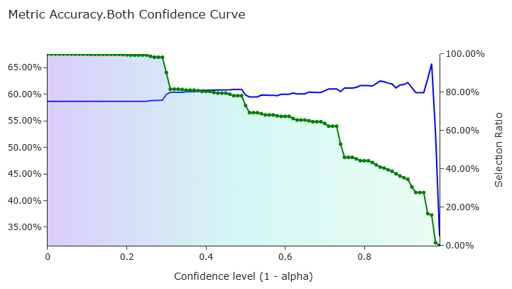

Intro to factor metrics
Validation Process
In factor validation, quantile regression is performed for each quantile to draw confidence interval at certain alpha.
For a certain alpha (used 0.1), calculate metrics for all, all_up, all_down, selected, selected_up and selected_down of y_val
and y_true to test prediction power of the model.
Metrics Functions
There are 5 types of metrics functions used to evaluate factor utility for every pred_var.
Note that y_val and y_true which are 1-d arrays are excepted for these functions.
- Metrics of Error:
- MAE (Mean Absolute Error)
- MSE (Mean Squared Error)
- Metrics of Accuracy:
- Acc (Accuracy)
- Acc_Quantile (Accuracy by Quantile)
- Metrics of Information:
- IC (Information Coefficient)
- IC_Pearson (Pearson Correlation of Information Coefficient)
- Metrics of Portfolio:
- Kelly
- Kelly
- AUC_ROC (Area Under the Curve - Receiver Operating Characteristic):
- Acc_AUC_ROC (Accuracy AUC ROC)
- IC_AUC_ROC (Information Coefficient AUC ROC)
Metrics File
After validation, Quark will generate metric files for each pred_var ending with .metircs.html in target dump dir.
Following should be noted:
accuracy_baselineBaseline assumes that one already knows the positive and negative distribution of
y_trueand makes decision based on the majority.
e.g.accuracy_baselinefor a day with 6:4 or 4:6 pos/negy_trueis 0.6.
Accuracy metrics and its AUC-ROC is calculated using raw-baseline. And the accuracy baseline is around 60% and varys in days.- Accuracy Confidence Curve & IC Selection Curve
For a good factor, its accuracy needs to increase linearly as the confidence level (1-alpha) increases, and when the confidence level is so large that selection ratio is too small, the accuracy is allowed to decrease.
A good factor AUC-ROC curve is like:
